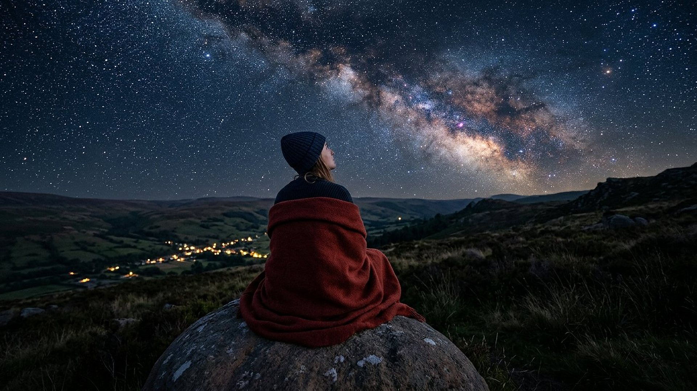

Accueil → Questions fréquentes
Questions fréquentes
L'âge de l'Univers, la théorie de l'évolution, le nom de Jéhovah, les images, la vie privée : des réponses directes aux questions que posent souvent les visiteurs.

Vos questions
12 questions fréquentes
Des réponses courtes, qui séparent toujours ce qui est mesuré, ce qui est débattu et ce qui relève de la foi.
Ce musée affirme-t-il que la Terre n'a que quelques milliers d'années ?
Non. La Bible affirme que l'univers a eu un commencement, sans en donner la date. Le musée présente l'âge mesuré de l'Univers, 13,787 milliards d'années dans le modèle de référence (F-001, salle 01), et lit les six « jours » de la Genèse comme des périodes de longueur indéterminée (voir la frise de la création).
Le musée s'oppose-t-il à la science ?
Au contraire : chaque fait publié s'appuie sur une source primaire avec son année, et les résultats discutés portent le badge DÉBATTU. Les lectures de foi portent le badge RÉFLEXION et ne sont jamais présentées comme des mesures. Voir Méthode et sources.
Que dit le musée de la théorie de l'évolution ?
La théorie de l'évolution, qui explique la diversité du vivant par la descendance avec modification et la sélection naturelle, est le cadre de référence de la biologie actuelle ; le musée ne la caricature pas. Les variations à l'intérieur des groupes vivants sont observées et ne sont pas contestées. Les questions abordées portent sur l'origine première de la vie et de l'information biologique, qui restent ouvertes (salle 10, salle 11). La conclusion en faveur d'un Créateur est une réflexion, présentée comme telle.
La science prouve-t-elle l'existence de Dieu ?
Aucune mesure ne peut, à elle seule, prouver ou réfuter l'existence de Dieu. Le musée propose une inférence raisonnée : « toute maison est construite par quelqu'un, mais celui qui a construit toutes choses, c'est Dieu » (Hébreux 3:4, traduction personnelle). Chacun reste libre d'y adhérer.
Pourquoi utiliser le nom « Jéhovah » ?
Dans les Écritures hébraïques, le nom propre de Dieu, écrit avec quatre consonnes (le tétragramme), apparaît des milliers de fois. « Jéhovah » en est la forme française traditionnelle ; la Bible Crampon de 1904, par exemple, l'emploie. Le musée l'utilise partout où figure ce nom.
Qui est l'« habile ouvrier » dont parle le musée ?
Selon la Bible, Jéhovah est le seul Créateur. Son Fils premier-né était à ses côtés « comme un habile ouvrier » (Proverbes 8:30), et c'est par son intermédiaire que toutes les autres choses ont été créées (Colossiens 1:15-16). L'esprit saint est la force agissante de Dieu (Genèse 1:2).
Les images sont-elles des photographies ?
Non. Les visuels du musée sont des reconstitutions numériques générées puis vérifiées une à une (aucun symbole parasite, aucun texte trompeur). Chaque image le signale dans sa légende. Les photographies authentiques, si elles sont ajoutées, porteront la mention « Photographie authentique » et leur crédit.
Les voix de l'audioguide sont-elles réelles ?
Ce sont des voix de synthèse en français. Chaque piste est accompagnée de sa transcription intégrale, identique au texte prononcé.
Que signifient les badges ÉTABLI, DÉBATTU et RÉFLEXION ?
ÉTABLI : résultat mesuré et publié, avec sa marge d'erreur. DÉBATTU : indice, résultat isolé ou interprétation discutée. RÉFLEXION : lecture de sens ou de foi, qui ne relève pas de la mesure. La salle 21 permet de s'exercer à les distinguer.
Puis-je visiter sans connexion ?
Oui. Après une première visite complète, le musée reste consultable hors connexion. Les détails sont donnés dans Comment fonctionne le musée.
Le musée collecte-t-il mes données ?
Non : aucun cookie, aucun traceur, aucun service extérieur. Seul votre choix d'affichage en contraste renforcé est mémorisé sur votre propre appareil, s'il le permet ; il n'est jamais transmis. Voir Crédits et mentions.
Que se passe-t-il si un fait se révèle inexact ?
Il est corrigé ou retiré, et la correction est consignée dans le journal de travail du musée. La science se corrige elle-même, et ce musée suit la même règle : un fait sans source primaire vérifiée n'est pas publié.